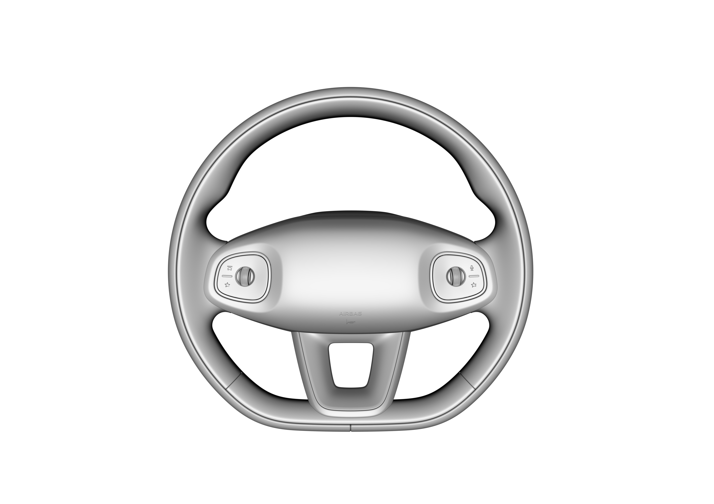

Переключатель на рулевом колесе
С обеих сторон переключателя на рулевом колесе расположены ролики и кнопки; можно поворачивать ролик большим пальцем вправо или влево, нажимать на ролик посередине либо прокручивать его вверх или вниз.
Сигнал кнопок переключателя на рулевом колесе передается по связи LIN, фоновая подсветка управляется аппаратным проводом.

Прокрутка левого ролика вверх/вниз: увеличение/уменьшение скорости круиз-контроля (в сценарии регулировки зеркал управляет регулировкой левого зеркала заднего вида вверх/вниз).
Наклон левого ролика вправо/влево: ※ увеличение/уменьшение дистанции круиз-контроля (в сценарии регулировки зеркал управляет регулировкой левого зеркала заднего вида вправо/влево).
Прокрутка правого ролика вверх/вниз: увеличение/уменьшение громкости (в сценарии регулировки зеркал: регулировка правого зеркала заднего вида вверх/вниз; в сценарии редактирования меню Комбинация приборов: переключение меню приборов на предыдущий/следующий пункт).
Наклон правого ролика влево: предыдущий трек / сброс вызова / (в сценарии регулировки зеркал: регулировка правого зеркала заднего вида влево); длительное нажатие — ускоренная перемотка медиафайла назад / (в сценарии регулировки зеркал: регулировка правого зеркала заднего вида влево).
Наклон правого ролика вправо: следующий трек / ответ на вызов / (в сценарии регулировки зеркал: регулировка правого зеркала заднего вида вправо); длительное нажатие — ускоренная перемотка медиафайла вперед / (в сценарии регулировки зеркал: регулировка правого зеркала заднего вида вправо).
: Настраиваемая пользователем кнопка Функция 1; длительное нажатие вызывает всплывающее окно настраиваемой кнопки.
: Настраиваемая пользователем кнопка Функция 2; длительное нажатие вызывает всплывающее окно настраиваемой кнопки.
: Переключение режима вождения.
: Голосовой помощник, ※ длительное нажатие включает внешнюю громкую связь
Нажатие центральной кнопки левого ролика вниз: ※ открытие/закрытие изображения 360°. Если функция панорамного обзора 360° не установлена, кнопка нажимается, но отклика Функция нет.
Нажатие центральной кнопки правого ролика вниз: OK / (воспроизведение/пауза медиафайла); длительное нажатие запускает сценарий редактирования приборов \ в сценарии редактирования приборов длительное нажатие сбрасывает выбранную информацию о вождении. (Примечание: в сценарии редактирования приборов при отсутствии действий в течение 5 s сценарий редактирования приборов автоматически закрывается)
Одновременное нажатие и удержание центральных кнопок обоих роликов в течение более примерно 8 s позволяет выполнить перезагрузку мультимедийной системы.